Wouldn’t it be neat if you had a lot of data to present and wanted to give the viewer the power to explore? Parameters in Tableau can help make that happen.
In this post, I’ll go over how to create a “selector” with parameters that will give the viewer options to view exactly the data they want.
In this week’s MakeoverMonday exercise, I looked at the number of hours that men and women spent on paid and unpaid work. It was really interesting to see the differences in different countries. That being said, it would have been tough to explore that if all the data was presented at once in one data visualization.
Here’s a tutorial on how to use parameters to present data better.
Creating Parameters
After I opened Tableau Public and connected the data set, I went to the worksheet along the left side to right click and Create Parameter.
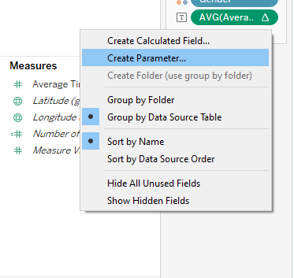
From there, I named it “Country Selector.” I also specified the data type as a “string”, selected “list,” and then added values from the Country data in the data set.
.png)
What this did is populate all the “options” that will then go in the selector.
Next I created a calculated field that will utilize the new parameter.
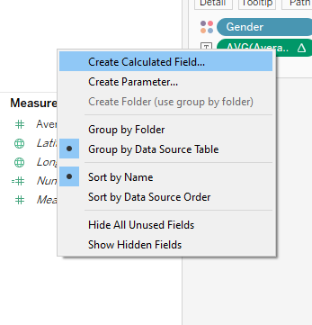
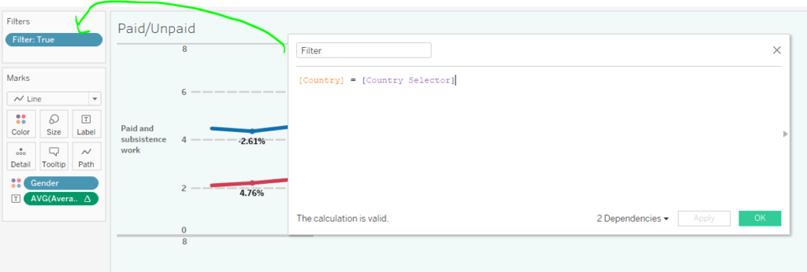
What this calculated field will do is create a true/false kind of situation in a filter. If a certain country is selected via the parameter, then it will filter the data visualization for that country. I then dragged that calculated field onto the filters card to specify “true” for it to work. Other examples of this application are here and here.
On the dashboard itself, there is a little icon that looks like boxes. Here is where you can make the parameter “country selector” show up. From there it can be dragged on to the layout where you see fit.
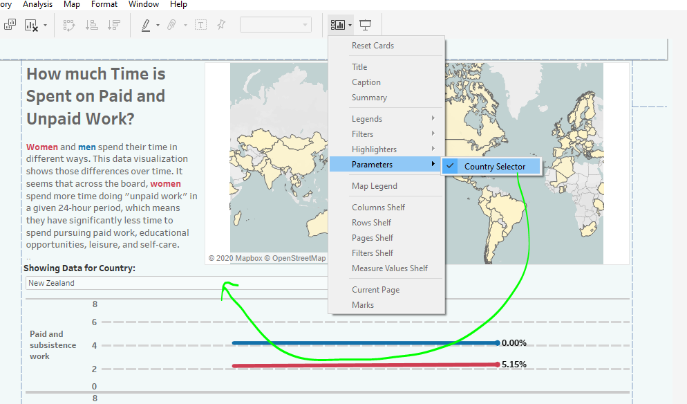
Formatting Options
Back to the worksheet itself, I happened to have data for average hours spent on different activities. I dragged that onto the “label” of the marks card and then right clicked to make it show “percent difference.”
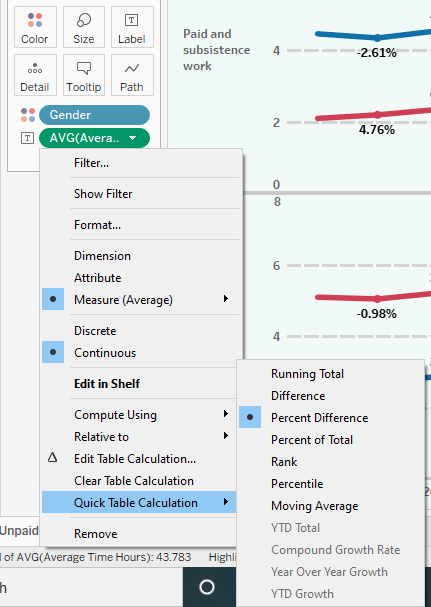
I right clicked on it again to make it show relative to “previous” point. What that will do is calculate the percentage change between one point to the next.
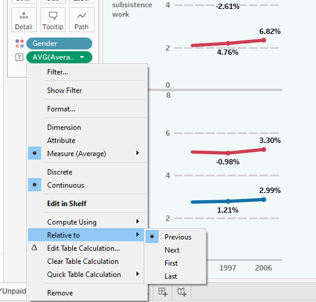
From there, I was able to format it to show a percent symbol after the number. There are multiple ways to access the formatting options and here is one of them.
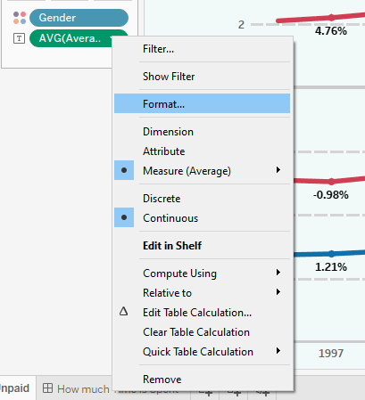
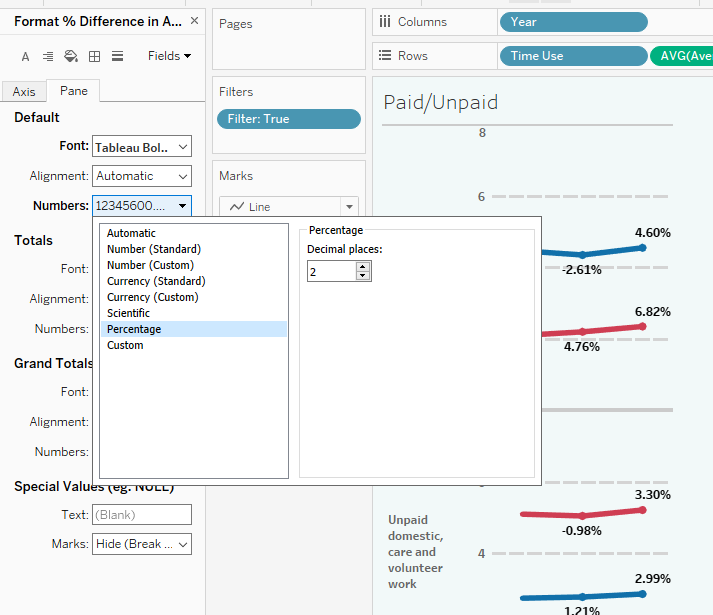
For this data visualization, I had two worksheets: a map and a line graph. So for each one, I formatted the tool tips to show information more like a readable sentence.
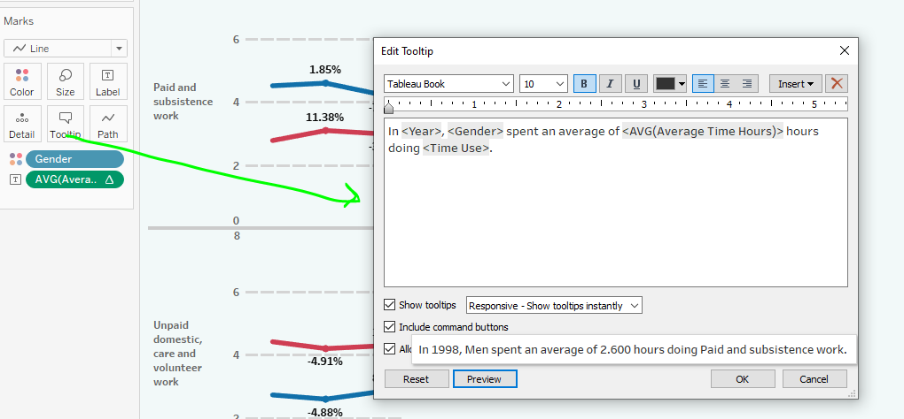
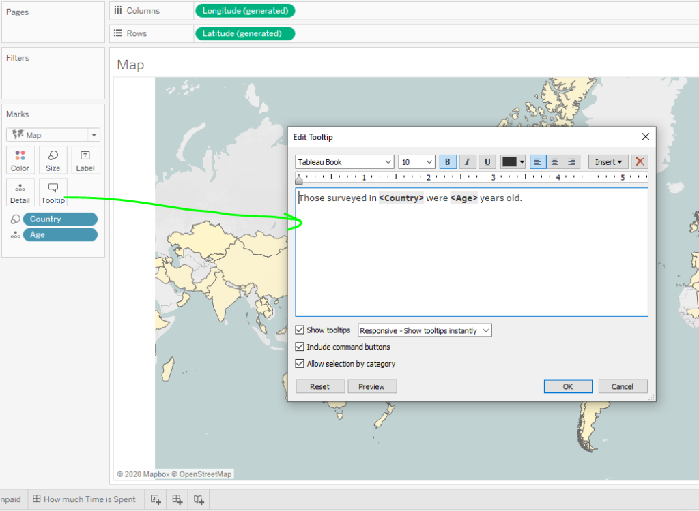
Actions and Putting it Together
On the dashboard, I went to Dashboard > Actions to create actions that would make the two data visualizations interact with each other.
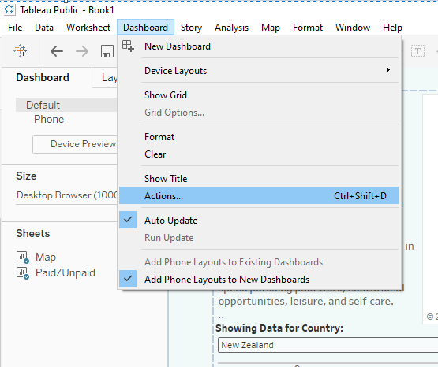
This particular parameter action is activated by “hovering” over the map. It will show only the line graph for that particular country and the name.
Recall that the country selector already on the dashboard. It will show only the line graph for a particular country, so the viewer has a couple options to explore.
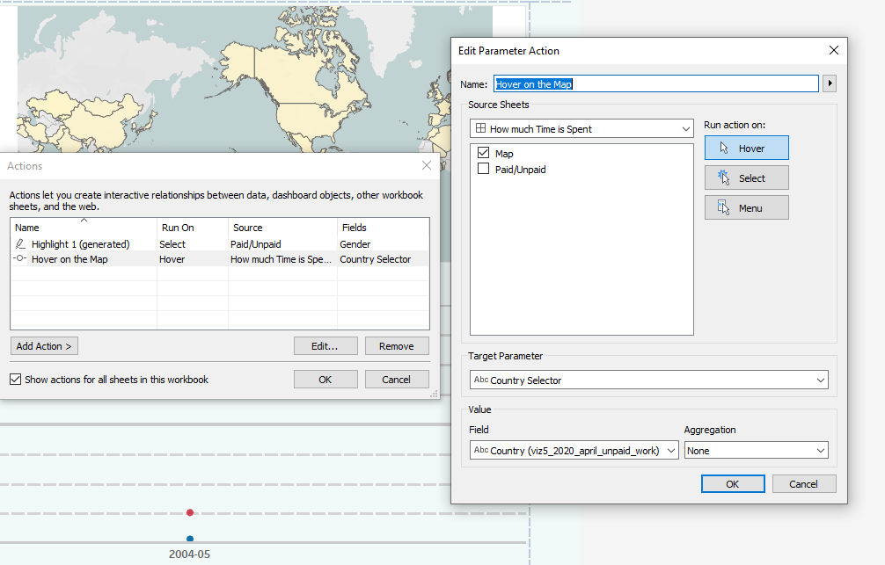
The Final Data Visualization
Here is the final data visualization. It has two visuals, a “country selector,” some actions, some formatted tool tips, and some formatted text.
And here is the interactive dashboard! Also, here is another example of making a selector for comparing things. That particular example happens to just use traditional filtering techniques. What’s the difference? Here’s a discussion on why you might use one or another.
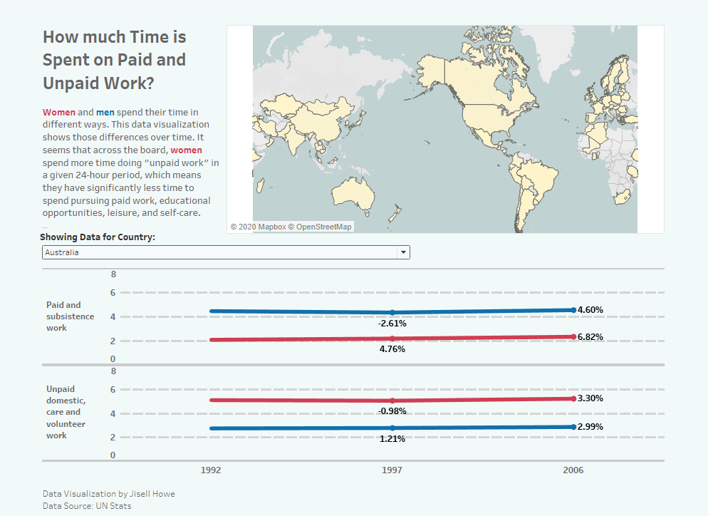